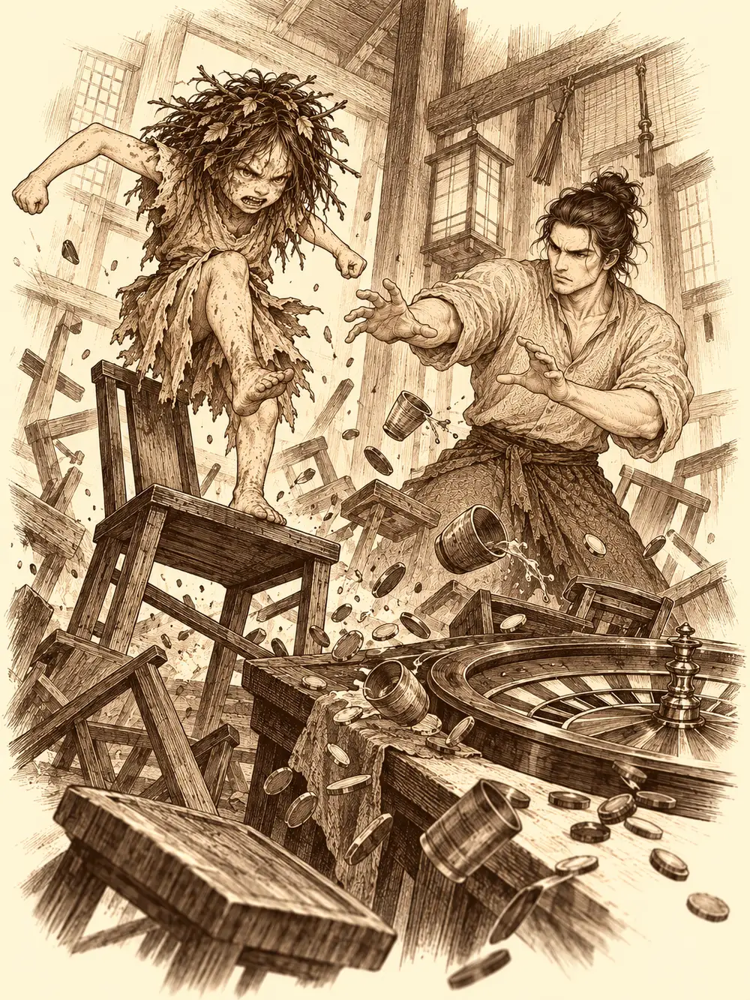

Capítulo 128
Apuestas en los bajos fondos
Libro VIII · El hilo maldito
Por primera vez en muchas semanas, Maroxi había dormido de un tirón. No le habían subido venas negras por los brazos ni le habían visitado las pesadillas ajenas que la criatura le metía en la cabeza cada noche. Se levantó con la marca de la sábana en la mejilla y la sensación rara de habitar un cuerpo que volvía a ser solo suyo.
En la base de Sho, todas las puertas de las habitaciones estaban rotas. Unos obreros acababan de arreglarlas y la noche anterior, sin que nadie supiera muy bien cómo, habían vuelto a saltar de sus goznes todas a la vez. Nadie se escandalizó. A eso se sumaba la crisis: todo lo que se compraba en Kuroto costaba el doble que un mes atrás, y en los mercados los tenderos pronunciaban los precios en voz baja, como si les diera vergüenza.
Maroxi se sentó a la mesa con un anillo entre los dedos. Se lo había puesto la jefa de los bajos fondos como garantía de una deuda y, en teoría, no había forma de quitárselo. Él afinaba los dedos hasta cambiarles la forma, el aro resbalaba y caía sobre la madera con un tintineo, y volvía a ponérselo. Le hacía sentirse un poco por encima de la mujer que había creído atarlo. Pero no se deshacía de él, porque había dado su palabra.
Tenía otros asuntos entre manos. En su último viaje había dado con una criatura de muchos ojos, lista y muy diestra con las ilusiones, y había cerrado un trato con ella: lo ayudaría con aquel libro que nadie conseguía leer a cambio de un objeto poderoso que él todavía no tenía. En la caja de la casa de inversiones habían aparecido además unos papeles llenos de cuentas, y aún no sabía de quién eran. De vez en cuando, uno de los ojos de la criatura se asomaba por la boca de su mochila y echaba un vistazo a la habitación.
Ginoyama había llegado esa mañana con los huesos molidos de cazar yokai por los caminos. Era un mago de fuego cubierto de escamas, con una cola que se le movía sola cuando algo le interesaba, y se dejaba caer por la base cada vez que se aburría, porque allí siempre pasaba algo. Le ofreció a Lor Miau un arenque seco tan fermentado que se olía desde la puerta. El gato lo miró con un desprecio muy antiguo, soltó un maullido que sonó a insulto y se apartó, y Ginoyama se comió el pescado él mismo.
Jin entró con la cara de quien ha pasado días llamando a puertas que no se abren. Maroxi lo había visto rondar por sitios poco propios de alguien de su posición y se lo dijo.
"Estoy intentando salvar a Kurobane", contestó Jin. "Le ha poseído una especie de sombra".
Sirth se lo había pedido. Jin había empezado por la iglesia, donde un sacerdote recordaba unos documentos sobre posesiones y rituales que alguien había robado meses atrás. Los soldados del shogunato se habían quedado con la investigación y, como Jin no pertenecía al shogunato, en palacio no le habían dejado ni asomarse al expediente. Había bajado a los barrios bajos y allí había descubierto que no conocía a nadie.
Maroxi levantó el anillo a contraluz.
"Tengo una socia reciente. Me regaló esto, y debería ir a devolvérselo. Si me acompañas, quizá puedas hacerle alguna pregunta. El precio no será barato. Y no hables del shogunato: allí abajo esas cosas no caen bien".
Entonces sonó un cristal haciéndose añicos en algún rincón de la casa. Fueron a mirar y encontraron entre los vidrios a un yokai pequeño y desgreñado, con cara de haber caminado mucho. Era Tap, la criatura que Arwen había sacado de una celda en el refugio de los cultistas y a la que había indicado cómo llegar al campamento y al portal. Habían pasado tres o cuatro semanas sin noticias suyas. Del kappa que había huido aquel mismo día no se sabía nada. Tap, en cambio, estaba allí.
Arwen levantó los bracitos, gritó su nombre y se lanzó encima. Tip y Top se sumaron, y en un momento hubo en el suelo una bola de pelo, dientes y risas que rodó hasta chocar contra la mesa. La niña salió de la maraña llena de mordiscos y con un chichón en la frente.
"Tap es amigo de Arwen", explicó, como si eso lo aclarara todo. "Arwen rescatar a Tap".
Ginoyama le dio con la punta de la cola un golpecito en la cabeza, toc, y ella se la agarró con las dos manos y se puso a jugar con ella como un gato con una cuerda. Cuando vio que los mayores se preparaban para salir, quiso saber adónde iban.
"A un sitio peligroso para niñas", dijo Ginoyama.
Arwen se puso de pie sobre sus pies descalzos y sacó pecho.
"No hay sitio peligroso para Arwen. Arwen, diosa guardiana de los bosques. Banzo lo dijo".
Después se acercó a Maroxi con los ojos muy abiertos y el labio temblando, una cara de pena tan perfecta que habría ablandado a un muro. Maroxi cambió de rostro y le devolvió la misma mirada desde una cara idéntica a la suya.
"Arwen se queda", le dijo con su propia voz.
La niña le hizo una pedorreta. Ginoyama la rodeó con la cola por la cintura y se la subió al hombro.
"¿En serio siempre tiene que haber alguien que cargue con la niña?", suspiró Maroxi, y se tapó la cara con la mano.
Recorrieron las calles anchas de la capital, dejaron atrás la taberna de Ushi y la tienda de Tsugami y torcieron por callejones que se iban estrechando hasta que los aleros casi se tocaban por arriba. El suelo se llenó de basura. Había gente pidiendo en los portales y voces que discutían detrás de las paredes. Maroxi les advirtió que, para la gente de aquel barrio, los cazadores eran unos pobretones que vivían de lamerles las botas a los nobles, y mandó a su cuervo por delante para que avisara de que llegaban.
"No sería mala idea que volvieras a ser cucaracha", le dijo a Arwen, que ya había estado allí una vez. "Pasarías desapercibida".
No le dio tiempo a terminar la frase. La niña se encogió hasta convertirse en un insecto brillante que trepó por su manga y se le instaló en el hombro. Maroxi tuvo que contener un escalofrío.
El vigilante de la trampilla los miró con su ojo malo. Se llamaba Struck y no los reconocía. Maroxi le murmuró unas palabras con mucha suavidad, el hombre se quedó un instante con la boca entreabierta y un hilo de baba en la comisura, y cuando volvió en sí los saludó como a clientes de toda la vida. Antes de bajar, Maroxi le dejó en custodia el ojo de la criatura, una esfera del tamaño de su cabeza cuya pupila seguía al mago a todas partes. Struck lo sostuvo como si le hubieran dado un melón.
Abajo estaba la taberna de las Cuchillas Negras, con sus lámparas bajas y su olor a vino viejo. La jefa limpiaba copas detrás de la barra. Se llamaba Tiari, y sonrió al verlo.
"Vaya, Maroxi. Cuánto tiempo".
"Ya te dije que era hombre de palabra".
Jin le explicó que buscaba unos papeles robados en una iglesia, rituales para exorcizar espíritus y sombras. Quería salvar a un amigo.
"Algo más noble", concedió ella. "Creo que tenemos algo por ahí".
Ginoyama ya se había sentado a la barra, había probado el sake, lo había encontrado fuerte y de fuego y había pedido que le dejaran la botella, añadiendo con su sonrisa más ancha que sus amigos se encargaban de la cuenta. Maroxi se giró despacio hacia él.
El precio de la información era sencillo de decir. Algunos de los hombres de Tiari se habían dejado en la casa de apuestas del señor Jester un dinero que no les pertenecía. Si ellos lo recuperaban, jugando o como pudieran, ella les hablaría de los rituales.
"Estamos hablando de mil monedas de oro".
Maroxi aprovechó para preguntar por otra cosa: había oído leyendas sobre un arma capaz de dar a quien la empuñara el poder de matar a un dragón. Tiari le sonrió. Algo recordaba, pero la memoria le fallaba para cosas tan extraordinarias, y esas cosas exigían un pago extraordinario aparte. Para demostrar su buena fe, Maroxi se afinó los dedos delante de ella, dejó caer el anillo y propuso que se lo quedara Jin, como prenda de un trato más amplio.
"¿Sabes cuál sería el problema?", dijo Tiari. "Que si se lo queda él y tú no pagas lo que acordamos, tendré que mandar a los chicos a matarte. Mientras tú lleves el anillo, estás protegido".
No pensaba confiar en alguien que todavía no había demostrado nada. Primero las mil monedas. Maroxi le lanzó el anillo al cuervo, que lo atrapó al vuelo y se lo trajo al hombro, al lado de la cucaracha. La cucaracha levantó una pata para despedirse, y Tiari se la quedó mirando con la cara de quien no ve algo así por primera vez.
Arriba recuperaron el ojo. En cuanto se alejaron de la trampilla, Arwen volvió a ser niña y se subió a los hombros de Ginoyama.
"Seguramente no podamos tomar ese dinero de forma honesta", le advirtió Maroxi a Jin.
"Aquí abajo casi todos son escoria. Haremos lo que haya que hacer".
Nadie entra en una casa de apuestas como cliente rico si llega con una niña salvaje y un lagarto borracho. Por eso pararon antes en un local vecino, bajo un farol rojo, y Maroxi pagó a dos mujeres para que los acompañaran. Entraron así en el local de Jester: Maroxi y Ginoyama con una mujer del brazo cada uno, Jin detrás con cara de funeral y Arwen olfateando el suelo con la nariz pegada a las tablas.

La sala estaba llena de humo y de luces. Había mesas de dados, dianas, ruedas de colores y juegos que nadie supo nombrar, y en la barra los esperaba un hombre con sombrero de copa y chaleco a cuadros.
"Hoy tenemos un gran bote", anunció. "Si ganan la mayoría de las pruebas, se lo llevan. Lo conseguimos hace poco, de unos cuantos perdedores".
Ginoyama le susurró a Maroxi que había trampas en todas las mesas. Arwen siguió el rastro de los hombres de Tiari por debajo de las piernas de Jester, y él la levantó de una pata, comentó que era un perro muy raro y la dejó encima de la barra. Todas las mesas olían a aquellos hombres, y detrás de la barra también. El dinero había pasado por todas partes. No había forma de saber dónde estaba guardado.
Decidieron jugar.
En la primera mesa había que lanzar dados. Arwen se convirtió en cucaracha y se coló por la ranura de las apuestas; dentro solo encontró las monedas recién jugadas. Mientras tanto, Maroxi movía los dados en nombre de ella con una mano invisible, y la mesa estalló en lucecitas: premio especial. La niña salió del cajón arrastrando la moneda más brillante que había encontrado y recibió una carta dorada. En los dardos, reunió los tres en un puño, los lanzó a la vez y sopló detrás de ellos un viento que los clavó en el centro de la diana. Otra carta. Maroxi admitió que, al final, traerla no había salido tan mal.
Luego llegó la ruleta, una rueda que giraba entre chispas de colores. Había que elegir rojo, azul o verde. Los demás apostaron veinte monedas, nueve, lo que les quedaba. Maroxi puso quinientas al azul.
La bola corría hacia el verde. Justo antes de caer, algo la hizo rebotar y fue a parar al azul.
A Arwen, que había apostado a otro color, se le hincharon los mofletes. Se puso de pie en la silla, empezó a patear y a gritar que no era justo, y el suelo respondió a la pataleta. Maroxi movió los dedos para detenerla y no pudo. El local entero tembló como un barco golpeado por una ola: cayeron copas, sillas y casi todos los clientes. Con la sacudida, la rueda volvió a girar. Se detuvo otra vez en el azul.
Maroxi cobró mil monedas y otra carta, y se la dio a la niña para que se le pasara el disgusto. La deuda de Tiari estaba ya en su bolsa, pero quedaba el gran bote, y nadie se levantó de la mesa.
En el tiro a los vasos, Arwen sacó además la pelota que le había regalado Danifae y la lanzó a la vez con un golpe de viento. Esa pelota no pertenecía al juego, atravesó la ilusión y fue a estrellarse en la frente de Maroxi. La niña corrió tras su juguete gritando mi pelota, mi pelota, entre mesas y entre piernas, y mientras todo el mundo miraba a la cría, la mano invisible de Maroxi vaciaba dos bolsas ajenas: veintisiete monedas en una, sesenta y siete en la otra. Nadie se dio cuenta. En la ronda siguiente, Maroxi ganó otro premio especial, y la carta acabó, como las demás, en el pelo de Arwen.
El último juego fue una bomba de luz con la mecha chisporroteando, que había que pasarse de uno a otro antes de que estallara. Estalló primero en las manos de Ginoyama y después en las de Jin. Arwen la esquivaba confundiendo a quien se la lanzaba y poniendo ojitos de gato. Maroxi se llenó de copias de sí mismo y, cuando la niña se le acercó demasiado, la convirtió en mono. La bomba reventó al final donde estaba él, en una lluvia de confeti, y la ganadora fue Arwen.
Arwen, ahora mono, no se conformó con ganar. Se colgó del techo y empezó a tirar excrementos sobre la sala. La gente gritaba y se tapaba la cabeza, Jester exigía que alguien sacara de allí al maldito mono, y la mano invisible pescó otras seis monedas en el desorden. Maroxi deshizo el hechizo, recogió en brazos a una niña muy satisfecha de sí misma y la sacó a un callejón. Allí la volvió invisible y la mandó dentro a buscar una palanca, un botón, cualquier cosa que abriera una puerta secreta.
Arwen encontró un botón bajo la mesita de Jester. En la mesa de los cazadores, mientras tanto, una ilusión anunciaba con letras enormes la hora del gran premio, y aparecieron cuatro huecos para cuatro cartas. Las cartas seguían en el pelo de la niña. Maroxi abrió la mano debajo de la silla, pidiéndoselas en silencio, pero fue Ginoyama quien tuvo la idea: hizo aparecer una bola de colores brillantes y se la pasó a Maroxi. Arwen corrió a por ella y, en vez de entregar las cartas, le cogió la mano a Maroxi y se la hundió en su propio pelo para que buscara él. Maroxi sacó las cuatro, y en ese momento la mano se le hinchó como un pan, y la hinchazón le subió por el brazo hasta la cara. Con la cara deformada y la sonrisa más digna que pudo, colocó las cartas en sus huecos.
Sonaron campanas. Del techo bajó una garra mecánica, avanzó hasta su mesa y empezó a soltar bolsas, una tras otra. Arwen pulsó el botón de debajo de la mesa de Jester y la garra volvió a abrirse, vacía. El propio Jester apretó el botón un par de veces con el ceño fruncido.
"Creo que este botón va mal".
Los cazadores recogieron las bolsas y dijeron que tenían prisa. En la calle, Maroxi les dio a las dos mujeres una moneda más a cada una por no haber visto nada.
"Arwen se ha divertido mucho", anunció la niña. "Arwen quiere volver".
Struck los recibió convencido de que acababan de llegar. Abajo, Tiari sonrió al ver las bolsas.
"Entonces estamos en paz".
"Aparentemente", dijo Jin. "Pero sigo necesitando esos papeles".
Tiari no los tenía. Se los había dado a otra persona, una clienta muy buena que le hacía muchos trabajos. El nombre costaba cinco mil monedas. Hacerle llegar a esa mujer el mensaje de que Jin quería tratar con ella costaba mil.
"Estoy un poco escaso de efectivo".
"Pues consigue algo y nos volvemos a ver, señorito Jin".
Jin salía de allí con una sola certeza nueva: los papeles estaban en otras manos. Arwen se acercó a Tiari y le olfateó el cuello, el pelo, las muñecas. Olía muy bien, anunció: a champú de flores, y la piel a miel. Tiari se apartó con la mano en la cara.
Maroxi se volvió invisible. Al desaparecer, vio que los ojos de Tiari seguían clavados en los suyos, como si nada hubiera cambiado, y que la jefa le hacía con los dedos un adiós muy discreto. Él se llevó un dedo a los labios. Pero Arwen ya olfateaba el aire, siguió el rastro y chocó contra unas piernas que no se veían.
"Aquí hay algo", dijo, y se abrazó a ellas como una lapa.
Hubo un aleteo de cuervos a su alrededor, un remolino de plumas negras, y Maroxi ya no estaba donde ella lo sujetaba.
"Vamos, Arwen", dijo Jin. "Maroxi quiere estar solo. Es muy especial. ¿No ves que siempre está blanco?".
Jin se llevó a la niña hacia la base, con el estómago de ella rugiendo por todo el camino. Cuando la sala se quedó tranquila, Maroxi reapareció ante la mesa de Tiari y se sentó frente a ella.
"Creo que tenemos un trato pendiente de hablar".
Lejos de allí, en el campamento del sur, Banzo hablaba con Kurobane cuando Gelbreak llegó hecho una furia y exigió verlo. El goliat lo recibió a solas. Gelbreak le echó en cara que se hubiera ido a un continente en guerra y se hubiera expuesto a caer en manos de su madre, poniendo en peligro a Calista y todo lo que estaban preparando. Banzo protestó: lo dejaban siempre fuera de las decisiones y luego le reprochaban que actuara a ciegas. El drow sacó una espada de luz y lo apuntó con ella.
"No voy a pelear contigo", dijo Banzo.
Gelbreak le explicó entonces lo que no le había explicado antes: la matrona podía leerles la mente o controlarlos, y Calista se había hecho modificar los recuerdos para proteger el secreto. Banzo le contó lo cansado que estaba y lo mucho que le dolía sentirse un estorbo. Lo que había detrás de la rabia del drow era miedo, a perder a Calista y a perderlo a él. Renovaron su confianza. Antes de que se marchara, Banzo le mostró una espada corrupta y le contó su sospecha de que funcionaba como las estatuas de la Puerta Negra. Gelbreak prohibió que nadie la tocara y le pidió un día para comprobar una teoría.
En Sho, Calista encontró las puertas rotas otra vez y ni una moneda para cambiarlas. Kazuki pasó por la base para hablarle de un antiguo compañero de escuadrón que combatía criminales en la ciudad y quería firmar como cazador, y Gelbreak desconfió en el acto de un candidato que mandaba por delante a un intermediario. Serafina, que se había ofrecido a arreglar las puertas, bautizó al drow entre martillazos como el señor Grrrr, y a Calista le gustó tanto que lo adoptó al momento. Le pidió a Gelbreak que sonriera de forma amistosa, al menos una vez. Él lo intentó, y el resultado fue tan forzado que la capitana dio un respingo y luego no pudo parar de reír. Siguió con las burlas hasta que la mano del drow empezó a brillar con una luz enfermiza. Calista lo agarró de la ropa y lo besó despacio. La luz se apagó, y Serafina siguió clavando bisagras en las puertas que quedaban.